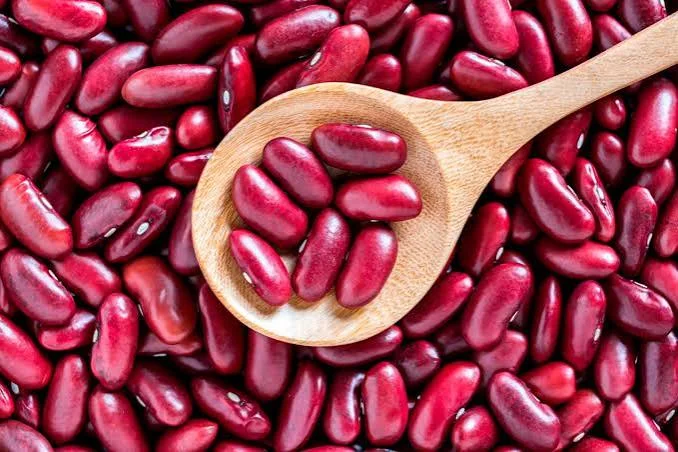
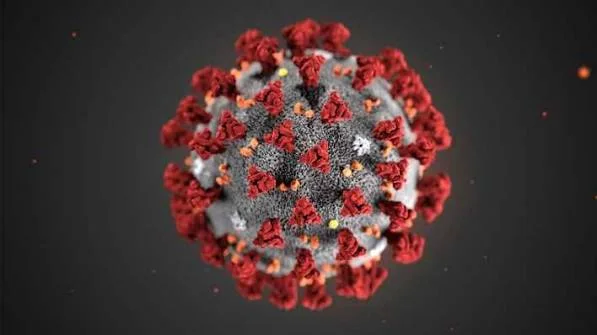

Einstieg · Impuls

Same
VirusErarbeitung I · Zuordnen
1Ordne die acht Objekte für dich allein in die Felder „lebt“ / „lebt nicht“ / „strittig“ ein.
2Benenne zu jedem Objekt ein Merkmal, das deine Entscheidung stützt.
Karte ziehen oder antippen, dann das Feld antippen.
Erarbeitung I · Vergleichen
1Vergleicht eure Einzelergebnisse in der Gruppe.
2Einigt euch auf eine gemeinsame Zuordnung.
3Stellt eure fünf wichtigsten Merkmale dar.
Sicherung · Zuordnung
Erarbeitung II · Kurzinput
1Ordne die Fachbegriffe den Alltagsbegriffen aus dem Tafelbild zu.
Alltagsbegriff:
Alltagsbegriff:
Alltagsbegriff:
Alltagsbegriff:
Alltagsbegriff:
Erarbeitung II · Kennzeichen-Check
1Prüfe, welche Kennzeichen zutreffen. Tippe die Felder an. Vergleiche die Summen. Bei manchen Objekten gibt es keine eindeutige Antwort.
| Objekt | Stoffwechsel | Wachstum | Bewegung | Reizbarkeit | Fortpflanzung | Summe |
|---|---|---|---|---|---|---|
| Stein | ||||||
| Zimmerpflanze | ||||||
| Katze | ||||||
| Same | ||||||
| Feuer | ||||||
| Virus | ||||||
| Roboter | ||||||
| Wolke |
Sicherung · Kriterien
1Erörtere, warum die Zuordnung bei Samen, Feuer, Virus und Roboter besonders schwerfiel.
| Unsere Kriterien | Strittige Fälle |
|---|---|
Sicherung · Merksatz
Die fünf Kennzeichen:
Ausblick · Hausaufgabe
Nächste Stunde: Wie hat man die Zelle entdeckt?
1Nenne ein Beispiel aus deinem Alltag, bei dem du unsicher wärst, ob es lebt.
2Erläutere deine Unsicherheit in ein bis zwei Sätzen.
Reflexion · Selbsteinschätzung
Tippe an, wie sicher du dich fühlst. Das ist nur für dich.